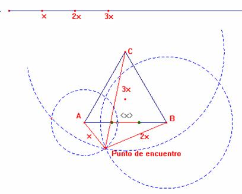
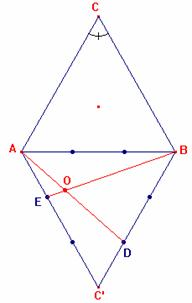
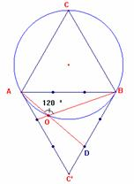
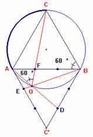
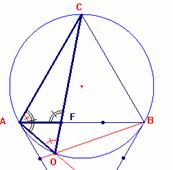

En el
desierto del Sahara, y en tres puntos A, B y C, que forman los vértices de un
triángulo equilátero de 700 km de lado, se encuentran
tres vehículos cuyas velocidades respectivas son 20, 40 y 60 km/h. comunicados por radio con el centro de operaciones,
reciben la orden de partir a reunirse lo antes posible.
¿Dónde
está situado en el dibujo el punto de reunión?
SOLUCIÓN: Carmen
Arriero Villacorta, profesora de Matemáticas del IES
Ramón y Cajal de Madrid, y asesora de Nuevas
Tecnologías de la Informacaión y Comunicación en el
Centro de Apoyo al Profesorado de Hortaleza-Barajas
de la Comunidad de Madrid (7 de julio de 2003).
A
partir de los datos del problema se tiene:
|
|
Velocidad
|
Espacio
recorrido |
|
Vehículo
que sale de A |
20 km/h |
x km |
|
Vehículo
que sale de B |
40 km/h |
2x km |
|
Vehículo
que sale de C |
60 km/h |
3x km |
Luego
el punto de encuentro tiene que estar a una distancia de B y de C el doble y el
triple respectivamente que de A.
Realizando
el problema de forma experimental con Cabri se llegan
a las siguientes conclusiones:
·
que la distancia del punto de encuentro al vértice A, es decir x,
tiene que ser mayor que del lado del triángulo
pues si fuera menor los vehículos que salen de A y B no se encontrarían.
.
· El punto de encuentro tiene que estar fuera del triángulo equilátero ya que el recorrido del vehículo que sale de C es mayor que el lado.
A continuación se muestra una solución aproximada obtenida con Cabri a partir de las observaciones realizadas anteriormente.

El punto de encuentro solución del problema se puede localizar de la
siguiente forma:
1. Dibuja el triángulo D ABC’ simétrico a D ABC respecto del lado AB y divide cada lado en tres partes iguales
2. El punto O, intersección de los segmentos AD y BE, es el Punto de encuentro. Es decir, AO = 2 BO = 3 CO. Compruébalo con Cabri.

Demostración

·
En el triángulo DAOB se cumple: Ð OAB + Ð ABO = 60º por
construcción. De lo que se deduce que Ð AOB = 120º.
·
Observa que en el cuadrilátero AOBC los ángulos opuestos son
suplementarios, por tanto el cuadrilátero es inscriptible
en una circunferencia que coincide con la circunferencia circunscrita al
triángulo.

·
Al trazar el segmento CO, los ángulos Ð AOC y Ð ABC abarcan el mismo arco
por lo que Ð AOC = 60º.
·
También abarcan el mismo arco los
ángulos ÐACO
y ÐABO
y como BE (prolongación de BO) corta al lado AC’ dividiéndolo en dos partes una
doble que la otra, también el segmento CO corta al lado AB en el punto F,
dividiéndolo en dos partes una doble que la otra, FB=2AF.
·
En el triángulo DAOB, por ser Ð AOC = 60º,
OF es la bisectriz del ángulo Ð AOB. Esto implica que los
segmentos AF y FB (partes en que queda dividido el lado AB por la bisectriz OF)
son proporcionales respectivamente a los lados AO y OB. Es decir,

·
Comparando los ángulos de los triángulos D AOC y D AFC se llega a la conclusión de que
son semejantes, por tanto sus lados
tienen que ser proporcionales, cumpliéndose las siguientes igualdades
Sustituyendo
el valor del lado de DABC se obtiene
De
donde CO = 3 AO